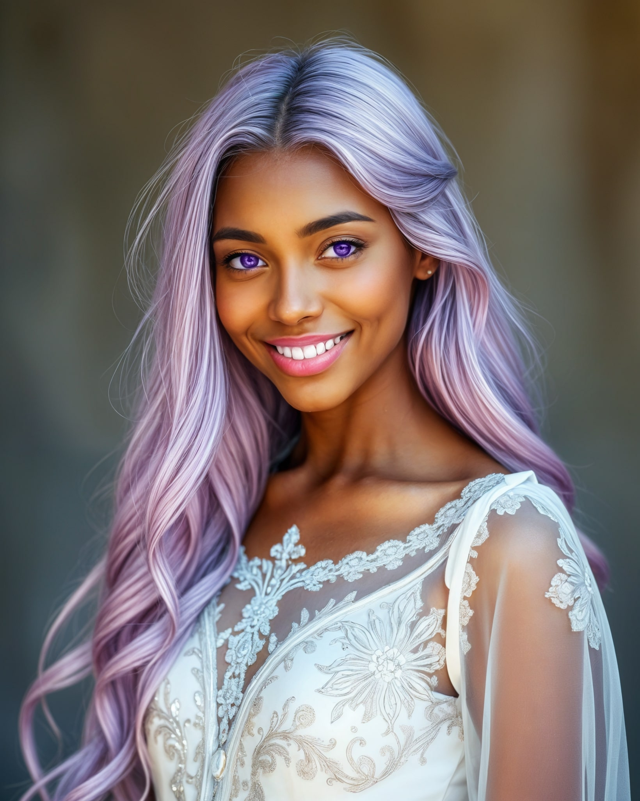

Here's the complete, fixed version of the code that correctly handles and displays Lilah Twilight's character data, ensuring that all details are included without changing her descriptions:
```html
Character Details - Lilah Twilight
Character Details - Lilah Twilight

Character Information
Appearance
Personality
Powers and Abilities
Background
Relationships
Role in Story
Inner Conflict and Character Growth
Impact on the World of Elarion